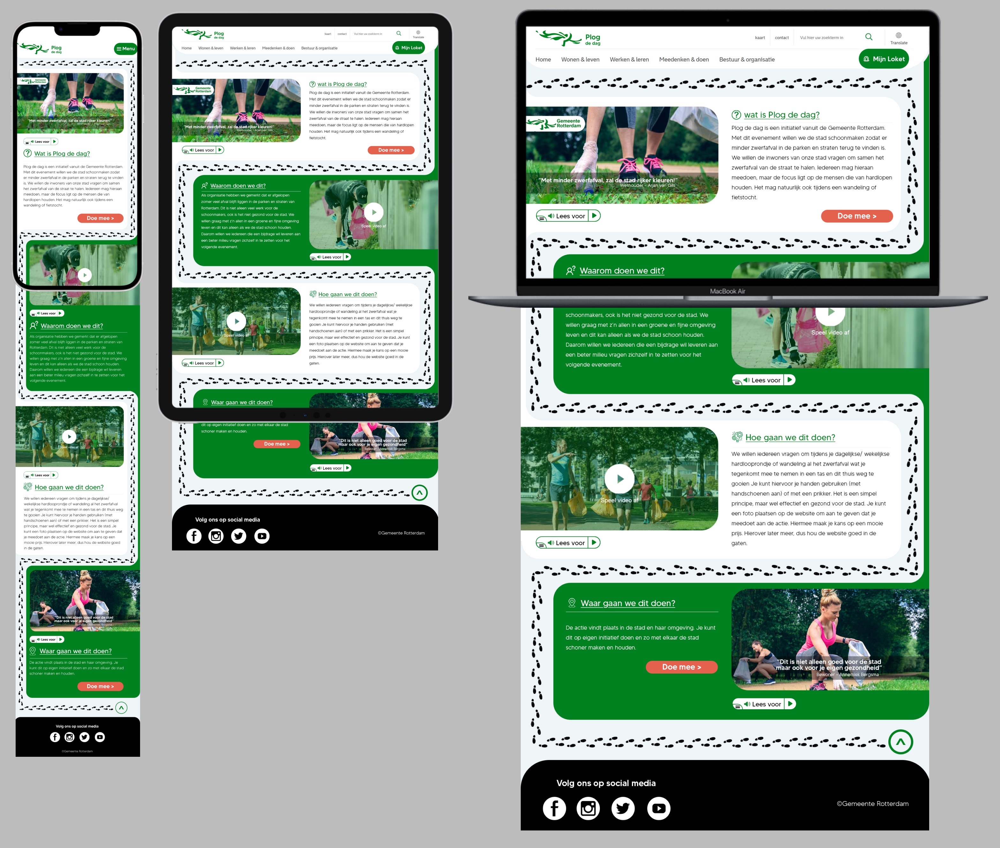

Plog de dag
Design a responsive one-page website for the Plog de dag campaign in the house style of the Municipality of Rotterdam, incorporating the various functions and the supplied content.
Wat is Plog de dag?
Plog the day is an initiative from the Municipality of Rotterdam. With this event we want to clean up the city so that there is less litter in the parks and streets. We would like to ask the residents of our city to collect litter from the street together. Anyone can participate, but the focus is on the people who like running. It is of course also allowed during a walk or bike ride.
Gemeente Rotterdam house style analysis

Breakpoints
Note:
In the final design, I decided to combine the initial sketch of the desktop and iPad versions. The size difference between the two devices was not significantly large, so I opted to create a responsive layout that works well for both desktop and iPad users.
final prototype
I designed the page in a new style keeping in mind the current Rotterdam style. I wanted to try a new style away from the sharp corners as in the current one, and add an interactive touch, which is the appearance of feet while scrolling on the page and the appearance of the following sections, according to the directions and ideas of the campaign.
